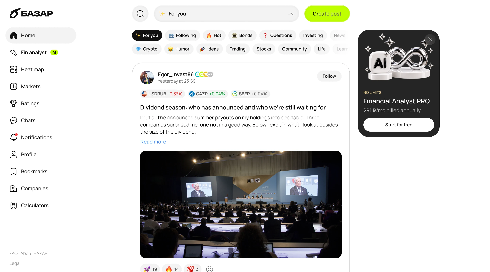
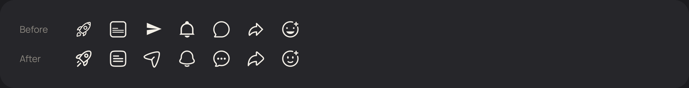
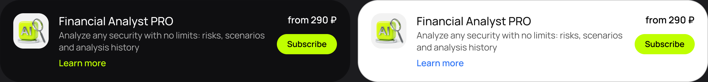
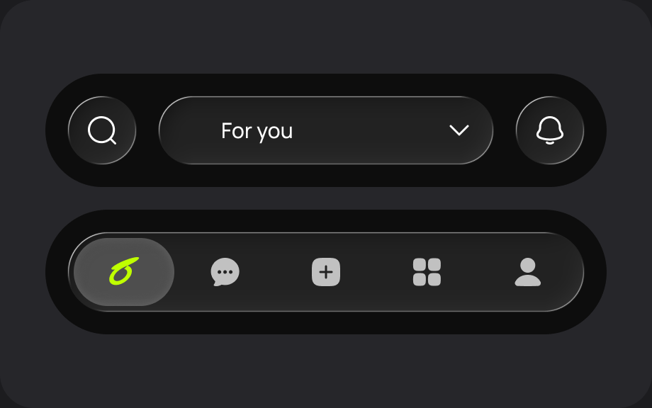
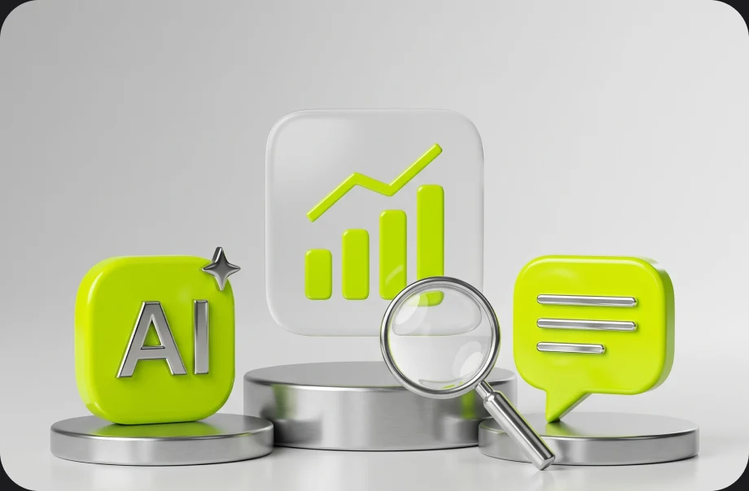
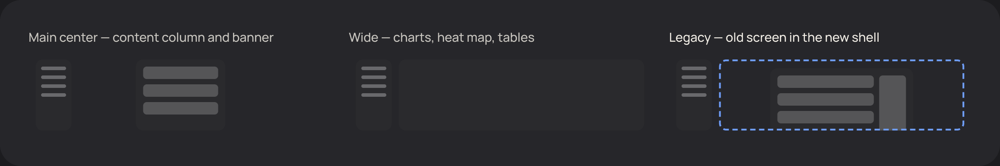

BAZAR
A social network for retail investors and financial services in one app
- Role
- Senior Product Designer
- Timeline
- Since June 2026
- Platforms
- iOS, Android and Web
Challenge
The CEO wanted design with its own visual signature — and speed: design must not slow development down. Four designers, three platforms, and development could not stop
Results
- ≈2×
faster to build a new feature
- −62%
color variables: 507 → 190
- 17 → 6
libraries instead of a mess of files
- 100%
of the plan approved by the CEO
One product language

One system for three platforms
A few shared libraries for iOS, Android and Web instead of 17
Icons in one style
A single style and a guide for drawing new ones
Editorial guidelines
Shared interface copy rules for the whole team
Graphics with one signature
We keep the prompts, so illustrations stay in one style
A restyle, not a redesign
We change the visual language, not the user flows. Users don’t have to relearn anything, and development switches over in batches
What we did
Concept and visual language
Typeface, color, glass and graphics — one design for three platforms
New layout
Wide pages and pages with a centered column

A plan for moving to the new design
We agreed to migrate screens in batches: new features ship in the new design, old screens wait until new tasks come up for them

The CEO approved the whole concept
We made the case with contrast measurements, references and clickable prototypes in both themes — not with “I like it”


01 · Typeface
One typeface for all platforms
Manrope instead of the iOS, Android and Web system fonts
Cyrillic and Latin together
Both drawn by the same designer, so Russian text sits evenly next to tickers
Tabular figures
Digits line up in columns, so quotes don’t jitter when they update
02 · Icons
A unified icon style
The icons varied in style and stroke weight. I redrew 213 icons and wrote a guide with 53 rules — stroke weight, gaps, corner radii, three sizes matched to font weight. With it, even Claude can draw new icons 😳

03 · Color
Bringing the brand color back to the app
Lime is BAZAR’s color in advertising, but the app had a lilac accent. We moved the product to lime, and in the light theme made links blue so they stay readable

How the product stayed consistent during the migration
In new screens, the brand color is set by a token. While it’s lilac, new and old screens don’t clash. Once every screen has moved, we’ll switch the value to lime — and the whole product changes color at once

04 · Glass
Glass effect
Glass works as long as there’s little of it. The rule: only elements that sit on top of content get the material
iOS — native glass
We use the iOS system material, so no custom implementation is needed
Android and Web — a custom component
Our own pseudo-glass component goes under buttons and other components
05 · Graphics
Our own visual signature at no extra cost
3D instead of flat illustrations: soft shapes and simple materials
Style
Volumetric objects stay recognizable even at small sizes
Documentation
Four designers maintain the graphics without a dedicated illustrator

06 · Layout
A universal layout
The menu sticks to the edge, and each page picks a type: wide for tables and charts, or a centered column for the feed

Problem
Old screens were built for the previous grid. Redoing everything at once would mean stopping development
Solution
A temporary Page Layout Legacy: the old screen sits inside the new shell, and only the header needs work